Om bij het Bewerkingsdashboard te komen klikt u op het document in de documentenlijst dat u wilt gaan behandelen. In Uitleg 1 is het Bewerkingsdashboard toegelicht.
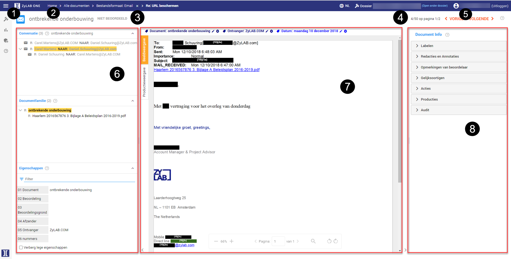
Bij de documentinformatie vindt u 3 opties:
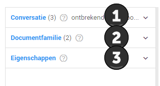
Hier ziet u bij emailgesprekken de voor- en nagaande e-mails van de betreffende e-mail die u momenteel heeft geopend. U kunt direct naar de andere e-mails navigeren door erop te klikken.
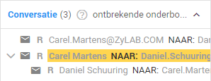
Hier ziet u de verbanden tussen documenten. Bijvoorbeeld wanneer een plaatje afkomstig is uit een Word document. U kunt direct naar de andere bestanden navigeren door erop te klikken.
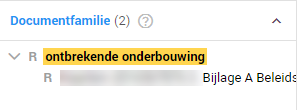
Hier ziet u de metadata van de documenten, zoals besproken bij de Field Filter in Uitleg 3 in het topic Zoekopdrachten. U kunt door de metadata zoeken door middel van de Filter zoekbalk.
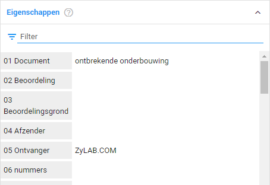
Bij de bewerkingsopties vindt u 6 knoppen.
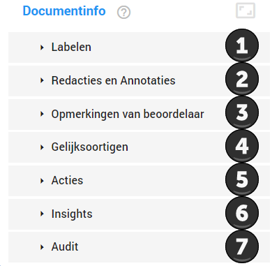
Hier vindt u de labels die u kunt toewijzen aan een document. U kunt een label toevoegen aan een document door er op te klikken. Sommige labels vereisen extra informatie om toegevoegd te kunnen worden. Meer informatie over het gebruik van labels vindt u in het topic Voortgang bijhouden door middel van labels.
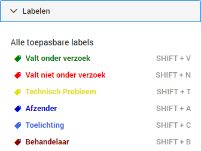
Met deze tool kunt u aflakken en annotaties toevoegen. Bij 1 kunt de aflaktool selecteren. Bij 2 kunt u de annotatietool selecteren. Bij 3 worden de annotaties en plaatsen van aflakken bijgehouden. Meer informatie over het aflakken vindt u in het topic Aflakken. Meer informatie over de annotaties vindt u in het topic Opmerkingen plaatsen.
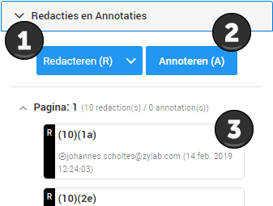
Hier kunt u eventueel opmerkingen toevoegen over het document voor andere behandelaars.
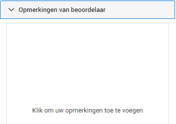
Hier kunt u kopieën en bijna-kopieën van documenten verwijderen. Meer informatie hierover vindt u in Ontdubbelen.
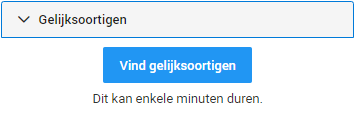
Hier kunt u een document downloaden of verwijderen. Het is mogelijk dat u geen rechten heeft voor het toepassen van deze functionaliteiten.
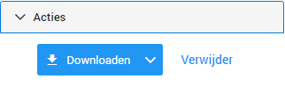
Hier ziet u de resultaten die zijn gevonden door Insights. Wanneer u op 1 van de resultaten klikt zullen deze in het document gehighlight worden.
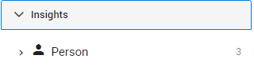
Hier kunt u zien welke bewerkingen er op dit document zijn uitgevoerd, door wie en op welk tijdstip. Zie voor meer informatie Audit (Engels).
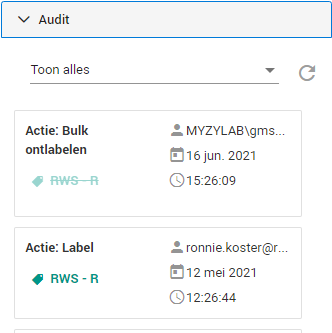